Country guide · 584 verified pins
Singapore
Known for: chicken ricelaksaHokkien mee
29 guides · 598 places.
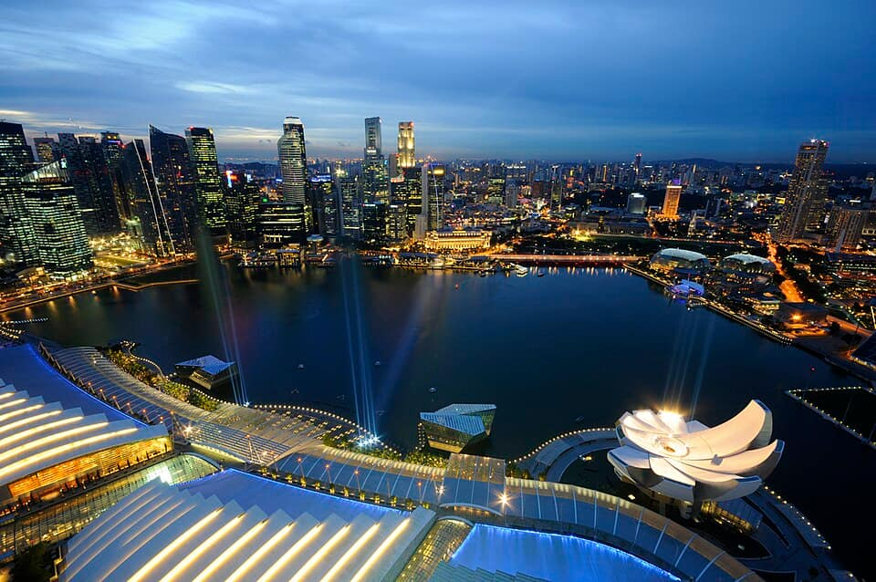
For you
Guides with the most open places for what you love come first, with how many each has. Every guide is still listed below.
Guides in Singapore29 guides
-
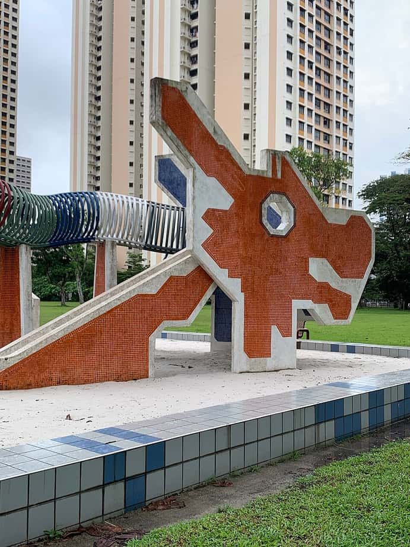
Toa Payoh
55 places Known forchicken riceHokkien meeToa Payoh Dragon PlaygroundRecommended by Seth Lui + 28 morePhoto: Chainwit. · CC BY 4.0 · Wikimedia Commons (resized)
Read as a guidebook — Toa PayohSee it in numbers — Toa Payoh
-
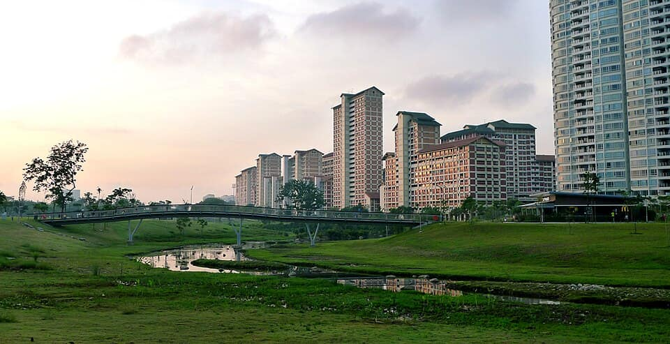
Bishan
43 places Known forchicken ricechar kway teowKong Meng San Phor Kark See MonasteryRecommended by Eatbook.sg + 23 morePhoto: Pagodashophouse · CC BY-SA 3.0 · Wikimedia Commons (resized)
-
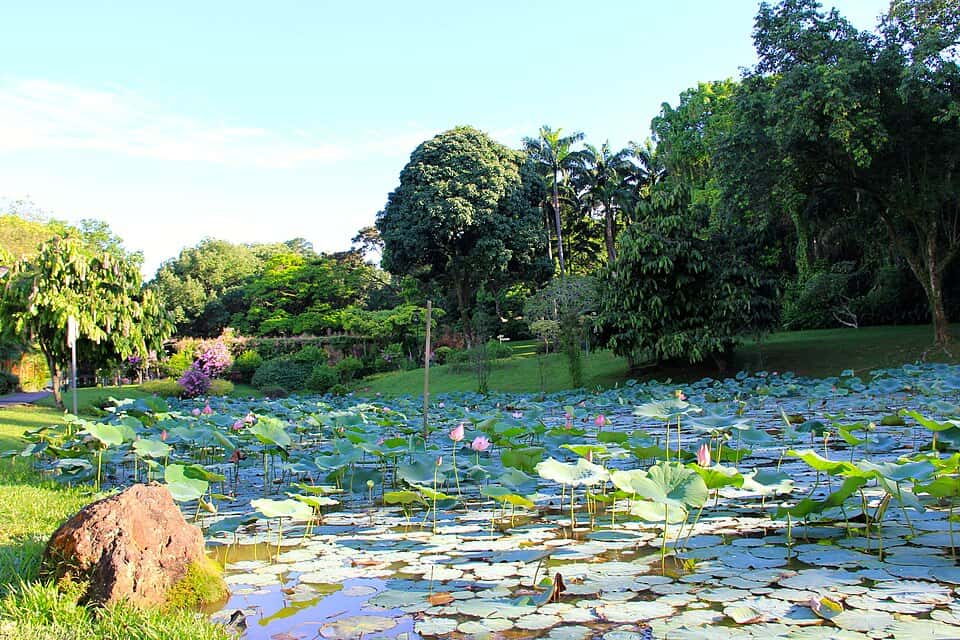
Ang Mo Kio
87 places Known forchicken ricelaksaBishan-Ang Mo Kio ParkRecommended by Seth Lui + 32 morePhoto: Qingwu Zhou (周庆武) · CC BY-SA 3.0 · Wikimedia Commons (resized)
Read as a guidebook — Ang Mo KioSee it in numbers — Ang Mo Kio
-
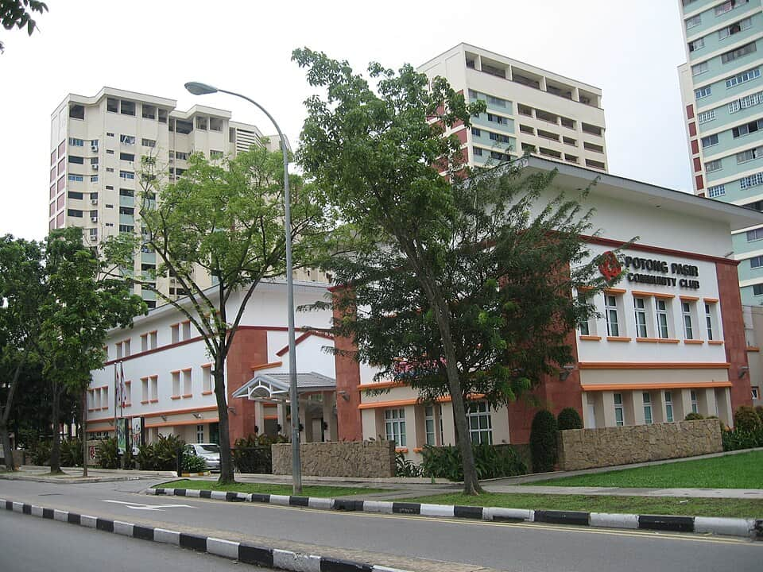
Potong Pasir & MacPherson
60 places Known forchicken ricelaksaPotong Pasir Sloping-Roof HDBRecommended by Seth Lui + 32 morePhoto: Terence Ong · CC BY 2.5 · Wikimedia Commons (resized)
Read as a guidebook — Potong Pasir & MacPhersonSee it in numbers — Potong Pasir & MacPherson
-
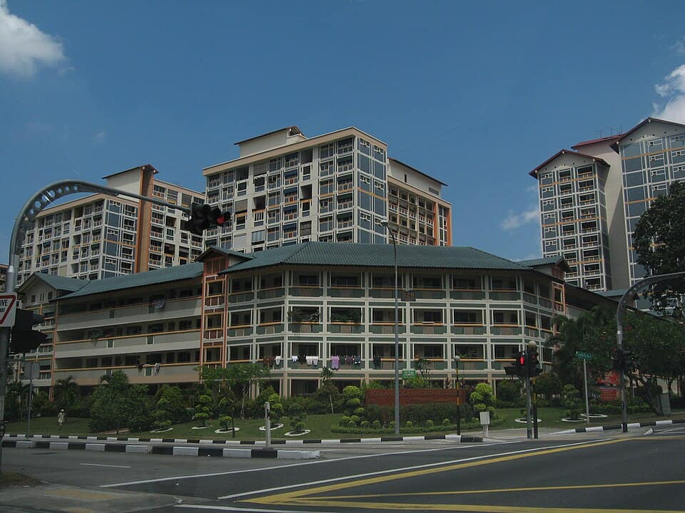
Upper Serangoon
99 places Known forchicken ricelaksaHougang Tou Mu KungRecommended by Seth Lui + 27 morePhoto: Terence Ong · CC BY 2.5 · Wikimedia Commons (resized)
Read as a guidebook — Upper SerangoonSee it in numbers — Upper Serangoon
-
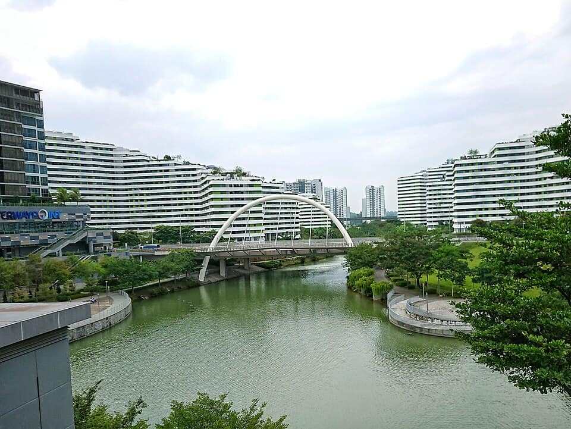
Punggol
48 places Known forlaksabak chor meeConey Island ParkRecommended by Eatbook.sg + 32 morePhoto: Deoma12 · CC BY-SA 4.0 · Wikimedia Commons (resized)
-
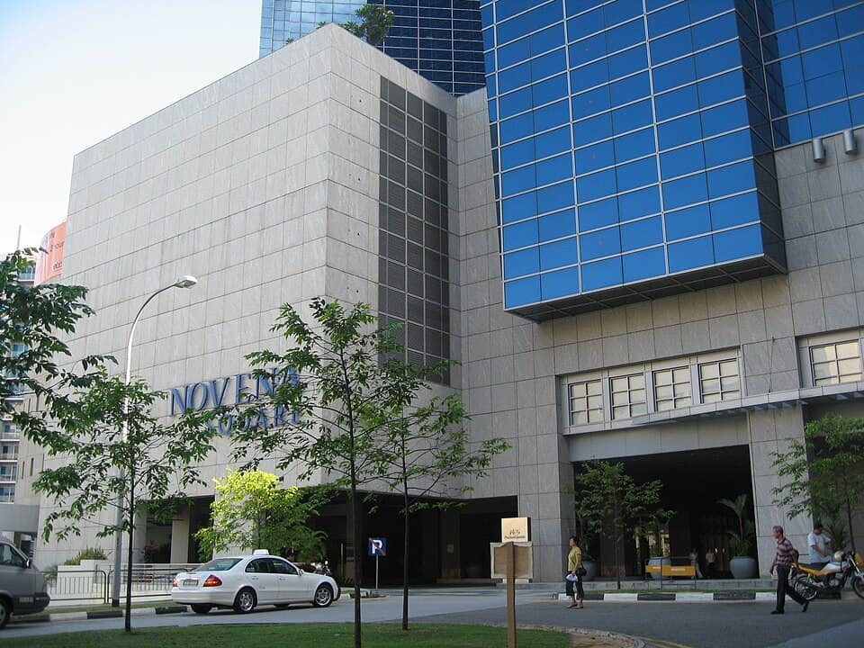
Newton & Novena
42 places Known forchicken riceHokkien meeNewton Food CentreRecommended by Eatbook.sg + 33 morePhoto: Exec8 · CC BY-SA 4.0 · Wikimedia Commons (resized)
Read as a guidebook — Newton & NovenaSee it in numbers — Newton & Novena
-
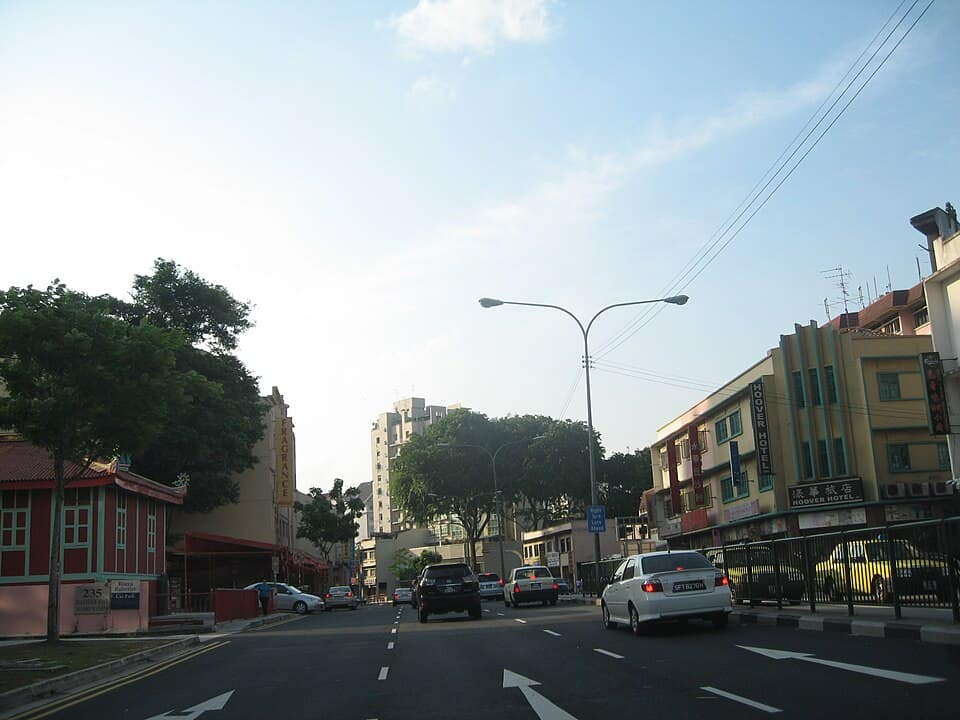
Balestier
49 places Known forchicken ricelaksaGoh Chor Tua Pek Kong TempleRecommended by Eatbook.sg + 23 morePhoto: Terence Ong · CC BY 2.5 · Wikimedia Commons (resized)
Read as a guidebook — BalestierSee it in numbers — Balestier
-
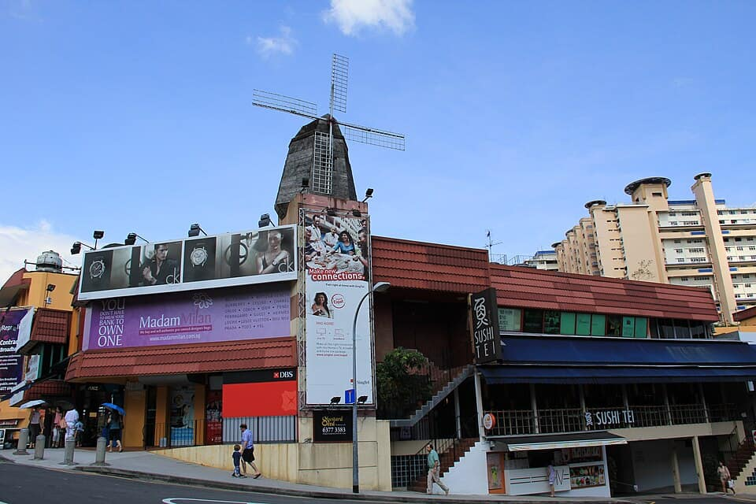
Holland Village
33 places Known forchicken ricechar kway teowGhim Moh Market & Food CentreRecommended by Eatbook.sg + 17 morePhoto: Qingwu Zhou (周庆武) · CC BY-SA 3.0 · Wikimedia Commons (resized)
Read as a guidebook — Holland VillageSee it in numbers — Holland Village
More in Singapore
- Bedok1 placechar kway teow · Hill Street Fried Kway Teow
- Bukit Timah3 placesSingapore Botanic Gardens · Selera Rasa Nasi Lemak
- Changi2 placesJewel Changi Airport
- Chinatown & CBD16 placeschicken rice · laksa
- Civic District6 placesNational Gallery Singapore · Odette
- Dempsey Hill2 placesCandlenut · Burnt Ends
- Geylang2 placesGeylang Lor 9 Beef Kway Teow
- Jalan Besar & Lavender6 placesbak chor mee · Hill Street Tai Hwa Pork Noodle
- Jurong3 placesFei Fei Roasted Noodle
- Kampong Glam3 placesSultan Mosque · Hjh Maimunah Restaurant
- Katong & Joo Chiat7 placeslaksa · bak kut teh
- Little India5 placesSri Veeramakaliamman Temple · Former House of Tan Teng Niah
- Mandai3 placesSingapore Zoo · Night Safari
- Marina Bay6 placesGardens by the Bay · Marina Bay Sands SkyPark Observation Deck
- Marine Parade & East Coast2 placesEast Coast Park · Haron Satay
- Old Airport Road4 placesHokkien mee · Nam Sing Hokkien Fried Mee
- Queenstown & Redhill4 placeslaksa · Depot Road Zhen Shan Mei Claypot Laksa
- Southern Ridges2 placesSouthern Ridges · Haw Par Villa
- Tiong Bahru3 placesLoo's Hainanese Curry Rice · Jian Bo Tiong Bahru Shui Kueh
- Upper Thomson & MacRitchie2 placesMacRitchie Reservoir · Springleaf Prata Place
Collections in Singapore3 collections · counts from the guides
- 150The hawker canonStalls the city argues about, town by town · across Singapore Newton & Novena 22Upper Serangoon 21Punggol 20Holland Village 19+14 more guides
- 51Temples & shrinesFrom Kyoto’s great halls to neighbourhood shrines · across Singapore Ang Mo Kio 10Potong Pasir & MacPherson 7Upper Serangoon 7Punggol 6+9 more guides
- 53Free to visitMuseums, parks and landmarks that cost nothing · across Singapore Ang Mo Kio 19Toa Payoh 10Bishan 8Potong Pasir & MacPherson 6+4 more guides
Elsewhere in Cleo
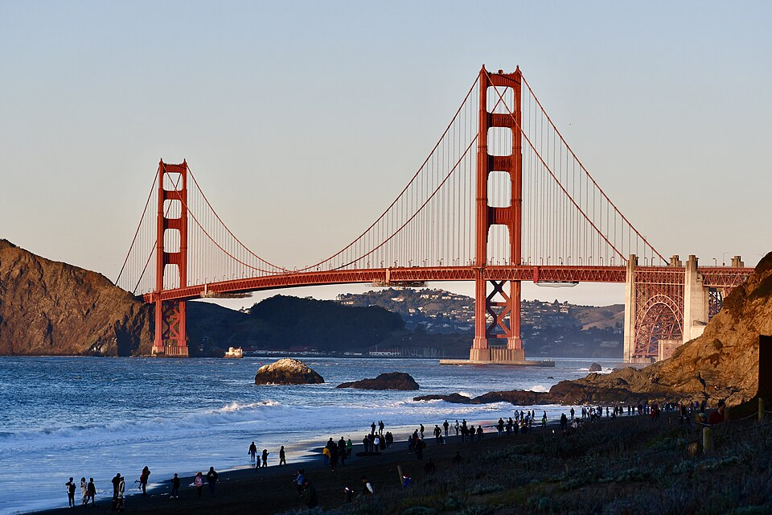
United States21 guides · 4,388 placesPhoto: Ashley98lee · CC BY-SA 4.0 · Wikimedia Commons (resized)
- Vietnam5 guides · 183 places
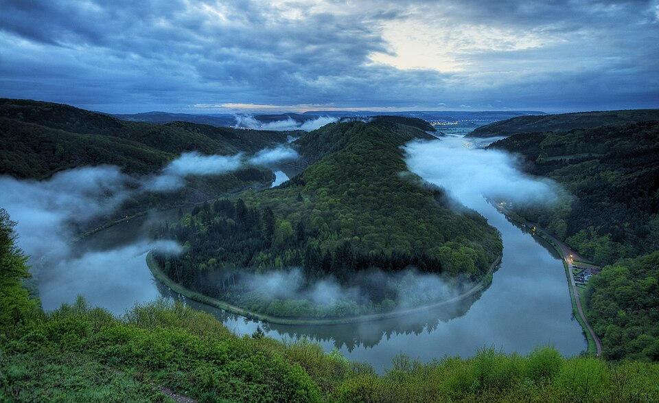
Germany3 guides · 751 placesPhoto: Mike Peel · CC BY-SA 4.0 · Wikimedia Commons (resized)
 Belgium5 guides · 651 places
Belgium5 guides · 651 placesPhoto: Trougnouf (Benoit Brummer) · CC BY 4.0 · Wikimedia Commons (resized)
- Japan5 guides · 2,092 places
Photo: Alpsdake · CC BY-SA 4.0 · Wikimedia Commons (resized)